最先去日本的时候，兴趣的首选项总是光怪陆离的东京、馨花雪海的北海道。所以当真正踏上关西，才发现日本人把很多美好事物隐藏守护在了京都。
京都的迷人之处，在于她把千年历史沉淀、转化为摩登的可爱事物。在京都的时间只有三天，于是我们在行程单上列了六件必做事项，逐一去开启她可爱和历史感的一面。
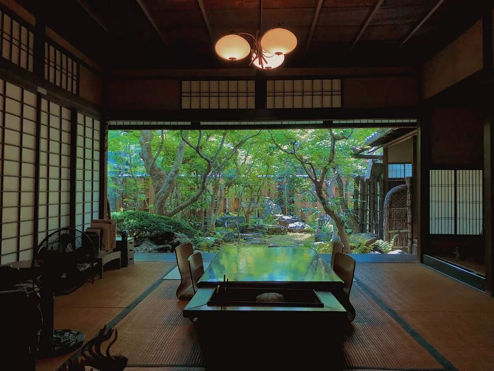
一、住进一家梦想的小町屋
去古老的京都，住现代奢华的高级酒店就太无趣了。一定要选择象征古京都精神的传统建筑——町屋，感受一下历史和宁静。
这次我们看上的是一家亲民的町屋「鲤屋」。房东是一对可爱夫妇，关键是那个小院子完全符合了对町屋的想象：宁静，不张扬。鲤屋有两层，一楼的坪庭让人忍不住当场雀跃。房东说，日式庭院一年四季都是风景：春季新绿萌芽、夏季夜晚蝉鸣、秋季枫叶正红、冬季雪花飘落。
夏天在缘廊下捧着茶，感受坪庭流转风光，就像家里一样，有种是枝裕和电影中的场景，一种平凡之美。
INFO：Kamigyo-ku Tenjinkita machi 29-1，上京区；入住 16:00-21:00，退房 11:00
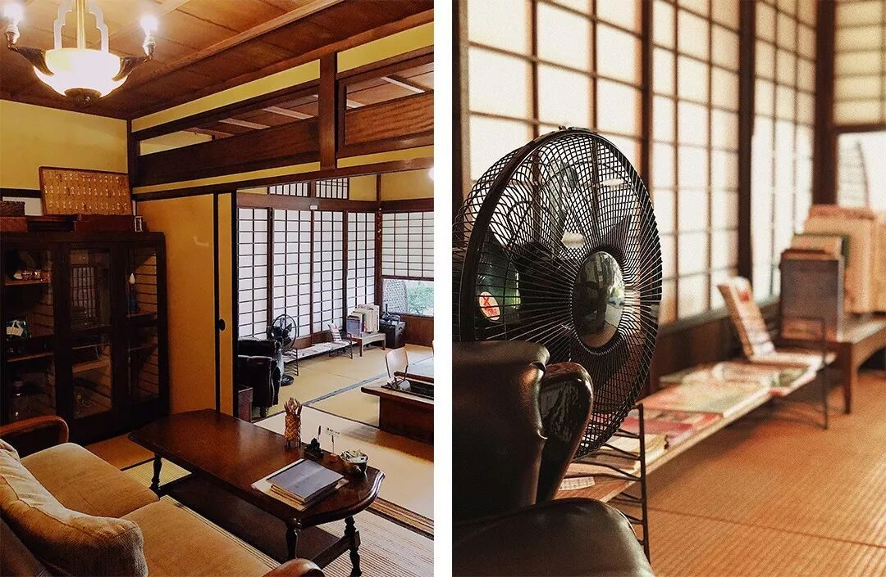
二、体验一次历史悠久的温泉
鲤屋离市区有点距离，这片区域也因此更清静。附近有家古老的温泉——船冈温泉，创业于大正末年，原本此处是料理旅馆，更衣室的格窗上雕刻着上贺茂神社赛马的图纹，是被日本文化厅指定的有形文物。
早上十点过来，泡汤的都是附近居民，温泉票 430 日元。泡在露天温泉里，一天的疲惫完全消除。泡汤后从自动贩卖机买一罐冰饮，听着电视里放出的日语——对京都的喜爱，在仲夏温泉夜又加深了一个浓度。
INFO：京都市北区紫野南舟岡町 82-1；周一至周六 15:00-01:00，周日 08:00-01:00
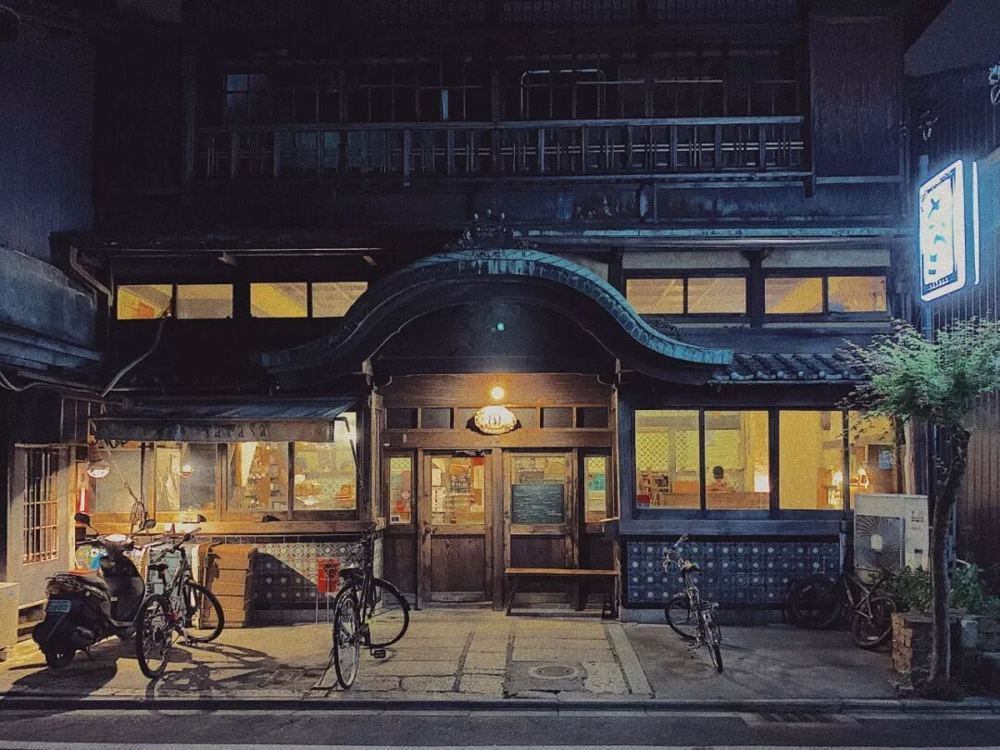
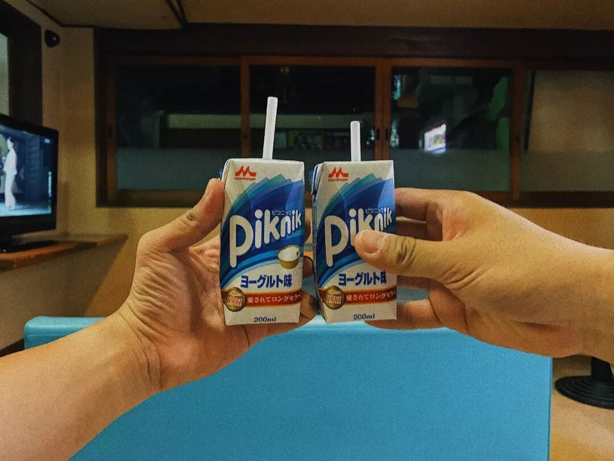
三、亲临京都人气最高的寺院
金阁寺。 二层与三层贴满闪耀的金箔，宝塔形屋顶上镶嵌着铜制的凤凰——一点也不富贵，反而透着一种神圣。在京都众多寺庙中它显得尤为高调，也是人气最旺的一座。
INFO：京都市北区金阁寺町 1 号；9:00-17:00
龙安寺。 从热闹的金阁寺过来，这座创建于 1450 年的禅宗古寺显得尤为幽静。龙安寺庭园是日本庭园抽象美的代表：著名的枯山水，用石、砂赋予无生命之物以生命，给不动之物以动之感。这座寺最大的魔力，是每个踏入的人都能被平静下来。
INFO：京都市右京区龙安寺御陵下町 13；3-11 月 8:00-17:00，12-2 月 8:30-16:30
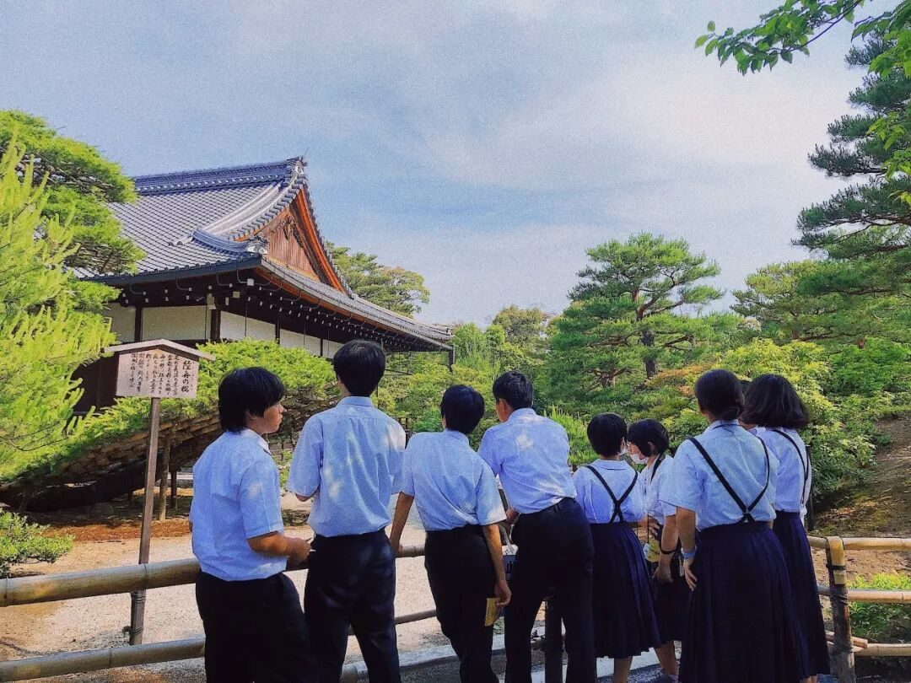
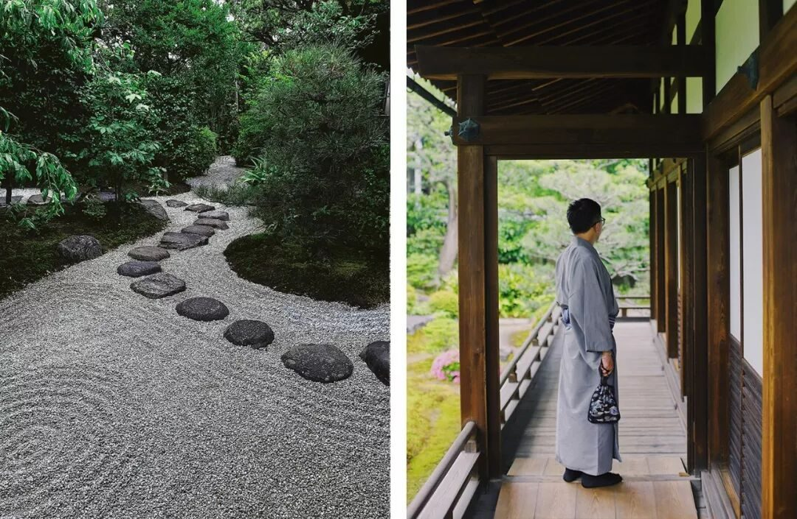
四、穿上一身和服漫步京都
第二天一早，来到伏见稻荷大社附近换上一身和服，用最传统的方式漫游京都。夏天也可以选浴衣，更轻便清爽些。
最出名的是神社主殿后面的「千本鸟居」，京都最具代表性的景观之一。好在我们去的时候不是假期，人不算多，舒心的绿色搭配醒目的朱红色，每张定格都很美。
之后找一个幽静的地方坐下来——建仁寺是很好的选择。作为京都最古老的禅寺，这里很少有游客、没有旅游景点的痕迹，恬静悠然，坐下来静静欣赏就够了。
INFO：伏见稻荷大社，京都市伏见区深草薮之内町 68 番地，全天开放；建仁寺，京都市東山区小松町 566-15
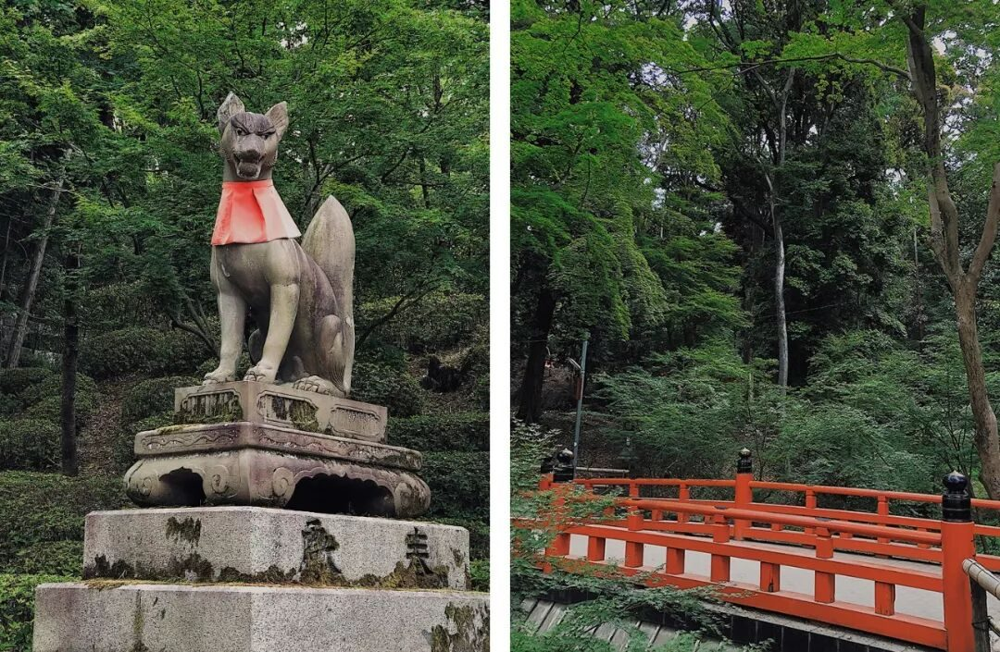
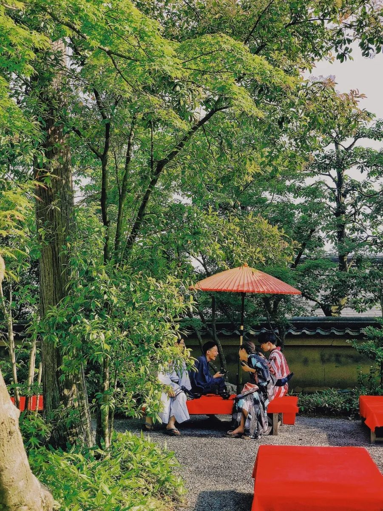
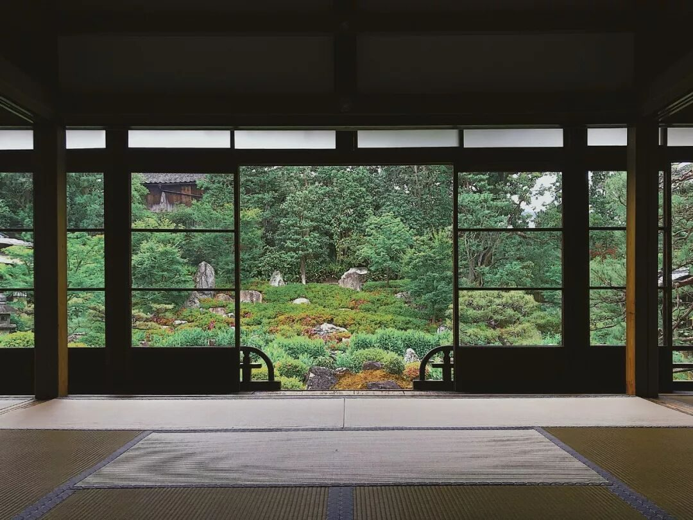
五、遇见电影中的京都
在有限的时间里，我们把最后一个名额留给了南禅寺。最大的原因是《迷失东京》——Charlotte 来京都散心，镜头里出现了这里。
她来到的是有名的「三门」：表示佛法修行大彻大悟的三座门，空门、无相门、无作门。到达此地时，不妨一步一步走过这解脱三门，或许生活中的迷惘，在那一刻也有了答案。
INFO：京都市左京区南禅寺福地町；3-11 月 8:40-17:00，12-2 月 8:40-16:30
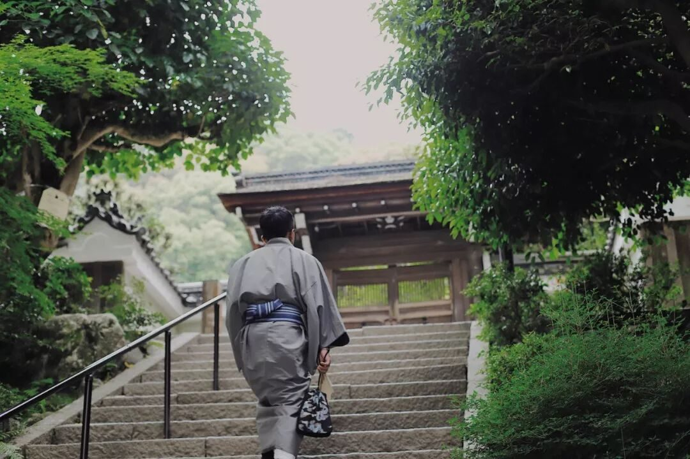
六、品尝一杯京都的咖啡
抛开人气连锁，推荐两家小众咖啡店。
TRAVELING COFFEE 开在高濑川旁一所小学旧校舍的老师办公室里，后来搬进了图书馆。品味咖啡，听高濑川寂静地流淌，店里约有 500 本书籍可随手翻阅，拿铁和手冲都值得尝试。INFO：京都市 310-2 Higashiiri Bizenjimacho；全年 11:00-20:00
wife＆husband，光听名字就很"甜"，由吉田夫妇经营，离鲤屋很近。门面藏在一条小路里，可以租下夫妇俩准备的"古野餐道具"，带到鸭川公园，看人来人往享受悠闲的咖啡时光。咖啡偏贵，但点心便宜好吃。INFO：京都市北区小山下内河原町 106-6
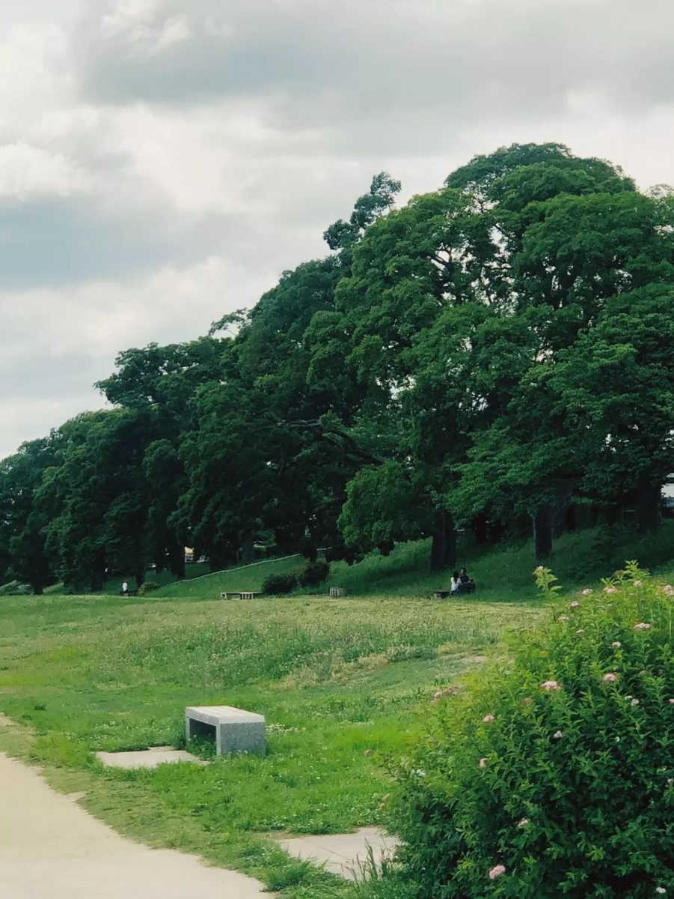
Epilogue
一路上总在感叹：日本人太会种树了吧，日本人太会打理寺院了吧，日本人也太会雕琢细节了吧！京都简直就是样板市。
这座以中国唐代长安城为蓝本的城市，长安已不在了，京都却越沉淀越美。短暂三天，我们完成了 TODO LIST，也留下了够记很多年的仲夏记忆。
curiohood · Stay Curious
事实核对：本文改写自 CurioHood（公众号 BOYHOOD珀琥）原创《＃0701｜用这六件事，去遇见一次京都》（2019 年 7 月 1 日，文字：Dill、NOSAJ）；町屋鲤屋、船冈温泉、金阁寺、龙安寺、伏见稻荷大社、建仁寺、南禅寺、TRAVELING COFFEE、wife＆husband 各地址与开放时间均据原文。图片来自原文。